目录
- 写在前面
- 引言
- 一、来自苏联的最后一封信笺
- 二、《极乐迪斯科》属于爱沙尼亚
- 三、你就是哈里尔·杜博阿
- 四、通过狂欢与城市交流
- 五、灰域回响
- 六、地狱发动机
- 七、比末日更可怕的是自己的过去
- 八、在意义的废墟上停留
- 九、现实迪斯科
- 写在最后
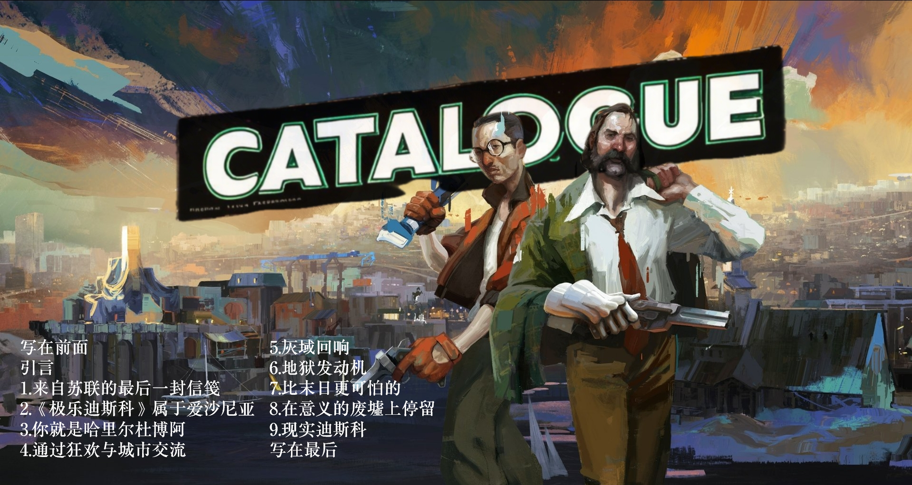
写在前面
为《极乐迪斯科》这样的作品撰写评测近乎是“不可能”的任务。
主创团队的复杂背景、阅读广度、思考深度，带来的是跳跃、宏大而美丽的艺术品。从药物成瘾到气候变化，从庸常的日常生活到交错的政治版图；疯狂、心碎、战后文化、种族主义、伪科学、神秘动物学、荒谬性……主角上一刻对着自己死去的尸体骂个不停，下一刻又在性骚扰门口的女士，前一秒争论种族歧视是不是基于幻想，后一秒又试图偷走书架上的地图。
所有这些，都让人望而却步，不敢轻易动笔。
为了确保本文不至于太过浅薄或缺失根据，在撰写的过程中，我收集了《极乐迪斯科》作者的背景，他们的政治立场，他们生活的国家的文化、历史，国内外媒体对他们的采访，以及游戏社区的部分评测（尤其是中文本地化团队轻语工作室撰写的文章）。
另外，还包括齐泽克和拉康的书、开发者博客，以及对于理解世界观至关重要的小说——主作家Robert Kurvitz撰写的《神圣与恐怖的空气（Püha ja õudne lõhn）》。
为了理解可能的存在主义，我回顾了一些相关作品。为了理解与城市的对话，我阅读了卡尔维诺《看不见的城市》的部分章节。
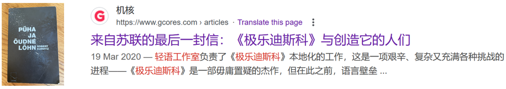
这些不足以让我参悟关于这个游戏的真正奥妙，但是让我更惊叹于它的美。
引言
五年对于电子游戏史而言是一个很长的跨度。
我们不缺游戏。要知道，光是去年一年，Steam的新上架游戏就达到了接近1.9万个之多。
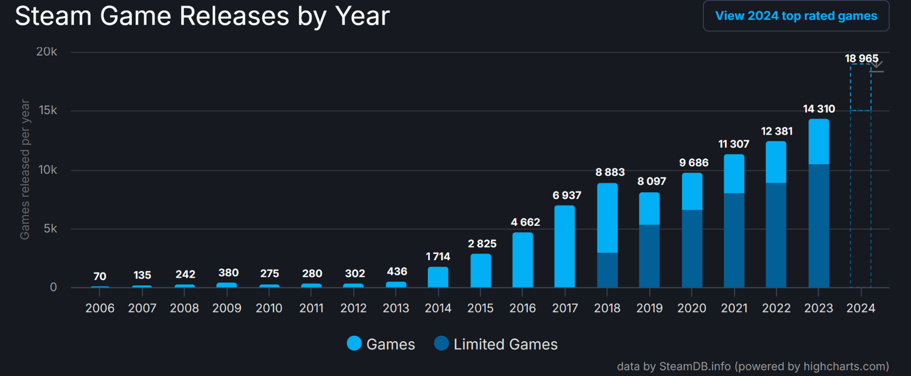
我们也不缺好游戏。
《哈迪斯》为roguelike注入叙事深度，《Balatro》赢得压倒性好评；任天堂先后用《Metroid Dread》和《塞尔达传说：王国之泪》续写传奇；FromSoftware借《艾尔登法环》打造魂世界的恢弘史诗；体量质量俱佳的《博德之门3》重现CRPG荣光；游戏科学不负四年之约，《黑神话：悟空》3天内卖出1000万。
所以，五年过去了，我们为什么还在玩《极乐迪斯科》？
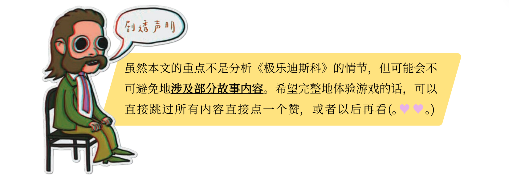
一、来自苏联的最后一封信笺
2019年的冬天，来自波罗的海小国爱沙尼亚的游戏工作室ZA/UM，凭借他们的第一部作品横扫TGA（The Game Awards，世界游戏奖）四项大奖。
这款在Steam平台悄然上线的游戏，在颁奖典礼上没有得到观众的热情欢呼，他们中的大部分人或许都还没有接触过《极乐迪斯科》。真正引发热烈讨论的，是主创团队在获得Fresh Indie Game时的感言：
我们感谢所有伟大先哲带给我们的影响：伊利亚·列宾、弗拉基米尔·马科夫斯基、维克多·崔，以及马克思和恩格斯在政治理念上的启迪。
举着奖杯喊出马克思和恩格斯的名字的，是首席编剧Helen Hindpere，她是一个社会主义者。在今年2月的一个采访中，她表示自己在政治立场上可以代表艺术总监Aleksander Rostov（视频中的红衣男子），以及主设计师Robert Kurvitz。
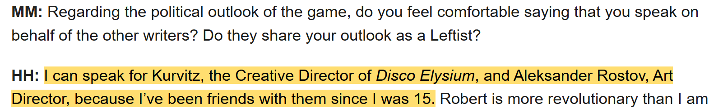
《极乐迪斯科》主创团队受到苏联的影响是不言而喻的。在名为《<极乐迪斯科>现已加入中文支持》的官方公告中，主创们将它形容为“苏联寄出的最后一封信笺”。这句话不断地被引用，现在常见的形态之一变成了“来自苏联的最后一封情书”。
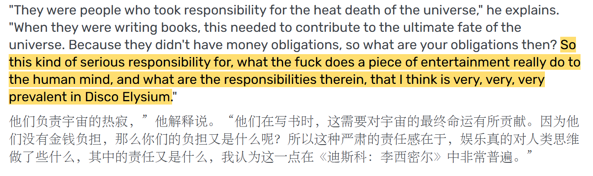
《极乐迪斯科》的美丽程度的确够得上是一封“情书”，但浪漫之余，更多的是严肃。Kurvitz说过，《极乐迪斯科》的一些方面“本质上是苏联的”，参考了Brothers Strugatsky的写作方式，以及苏联科幻的传统风格——现实主义、奇怪、略带美感，但有崇高的理想。
ZA/UM在壁炉架上摆放着一尊闪亮的绿金色列宁半身像，Kurvitz开玩笑说它很便宜，因为“苏联解体后列宁雕像大甩卖”。
我喜欢说的一件事是，对我来说这只是一个健康的传统。这关乎忠诚，关乎我出生的国家。这是我成长的方式，这是我被告知要追随的人，如果我的写字台上没有列宁，我会是一个顽劣的革命者，有点前卫的叛逆者。——Kurvitz
不过，在饱受苏联创痛的东欧国家，这样的做法终究是十分罕见的。
苏联解体后，”社会主义者”不再是理想主义的旗帜，反而化作了一道渗血的旧伤疤。被称为“社会主义者”或“共产主义者”是一种侮辱，几乎每个左翼人士都会先思考一下——这真的是我吗？毕竟，苏联解体至今不过几十年，被送往西伯利亚的家人还没有变成一个个孤零零的名字，人们还留存着许多痛苦的记忆。
西方国家对于冷战的记忆更深刻，这也是为什么《极乐迪斯科》的主创在台上感谢马克思以及恩格斯之后，引发了热烈的讨论。

ZA/UM的致谢对于西方网友而言太过于不可思议，以至于他们猜测这是一种反讽，但主创团队很快否认了这种可能。其实，他们在游戏中的态度也很显然——并未使用“社会主义”或“左派主义”等较为温和的词汇，而是使用了“共产主义”。不少后苏联国家的一些玩家对此感到不适，事态严重的时候，在Steam上涌现了一批因政治原因而恶意打出的差评。
那么，《极乐迪斯科》是不是一个左翼游戏？我的看法是，是，但也不是。因为 感谢马克思与恩格斯的同时，他们致敬了Viktor Tsoi。
Viktor Tsoi是前苏联乃至当今俄罗斯重要的文化偶像，被称为前苏联的摇滚教父。彼时，正是戈尔巴乔夫带领下的体制改革时期，高度集体主义且政治化的社会里，年轻人燃烧着愤怒与孤独，不知道如何平衡幻想、现实，以及“忠诚”。
15岁时，Viktor Tsoi就因为在操场上放声高歌披头士被学校开除，原因是触犯了“反革命罪”。他后来成立的Кино乐团是苏联叛逆青年心中的摇滚天团代表，政治立场鲜明，敢说敢唱。例如，《Электричка》描述一名男子坐在火车上，却对自己要去哪里束手无策——再明显不过的隐喻。
Кино的许多歌都被当局严禁传唱，乐队成员还曾被软禁。
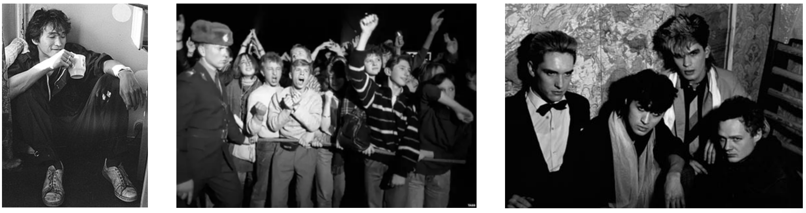
然而，Кино被软禁的当天，愤怒的学生包围了警察局。他们手举蜡烛，一声声地高喊：“把Кино还给我们！”“我们需要Viktor Tsoi！”这是他们面对政府少有的正面抗争。Viktor Tsoi28岁去世时，莫斯科的年轻人选择阿尔巴特大街作为纪念场所，创作大量的巨幅画像和标语，为他每天献上鲜花。
歌曲或许不能改变世界，但Viktor Tsoi改变了我们。——写于墓碑
摇滚教父的故事和《极乐迪斯科》没有太多关系，但这意味着，ZA/UM同时还在台上感谢了一个反战、反苏联政府的人。我认为这相当巧妙，因为这很好地体现了他们的底色——包容各种观点，什么都讨论。 没有顽固的立场，只有暂时的倾向。
这样的底色也体现在他们的游戏设计中，玩家可以同时内化几种对立的思想——代表共产主义的“马佐维亚社会经济学”“大共产主义建设者”和代表资本主义的“间接税收模式”可以共存。
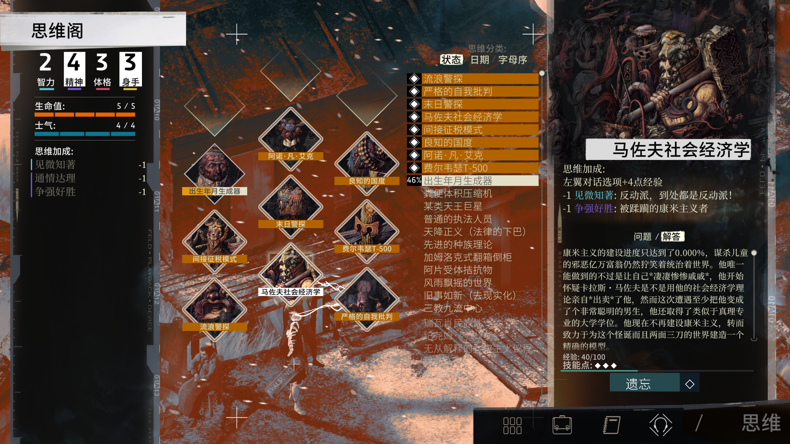
游戏中所有思想的获取都有条件。一般而言，玩家要做出相应的行为。例如，在不同的对话反复受贿或支持压榨工人，才能解锁资本主义思想。
这意味着， 《极乐迪斯科》不是一个站队游戏，玩家可以自由地改变自己的政治观点。只不过，对于其中的任何一种，制作组都透露出了一丝淡淡的嘲弄。
他们想要的不仅是铭记历史、正视历史，还是超越历史。
二、《极乐迪斯科》属于爱沙尼亚
作为波罗的海国家的一员，爱沙尼亚的历史、文化，深深影响了《极乐迪斯科》的创作。
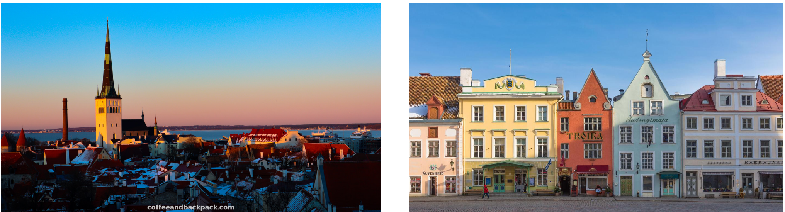
他们曾先后被德意志骑士团和俄国征服，宣布独立后不久又被苏联占领。
然而，这个130万人口的小国在1991年脱离苏联时，人们期待的繁荣自由并未完全实现—— 这种现实中的转型阵痛，在游戏中化作了一幅战后社会的动荡图景。
Robert Kurvitz出生于1984，主创团队的年龄大致相仿。他们中的不少人是苏联末日荣光的见证者，也是爱沙尼亚从国家社会主义经济向资本主义市场经济过渡的亲历者。这一代人的童年和他们后来的青年时光形成了截然不同的对比——苏联解体之前，人们以为只要独立，一切都会好起来。解体之后，却发现自己的祖国在资本的世界里没有任何话语权。前方等候的，是经济衰退、大面积失业，和充满痛苦的社会。
我们的这一代人非常受苏联解体、90年代塔林和爱沙尼亚时期的影响，那是一个非常痛苦的时期。它催生了我们成长过程中所听的音乐，歌词深刻、内容丰富。现在，爱沙尼亚不再是那个地方了。我们做出了Skype，成为了世界电子首都的e居民。——Robert Kurvitz
因此，政治问题对于爱沙尼亚人而言，是司空见惯的日常话题。首席编剧Helen14岁时与一些有政治理念的朋友创建了一个公社，由于很难在传统的报刊上发表自己的看法，他们创建了一个博客，名字就是ZA/UM。
这个博客现在仍然能找到：https://web.archive.org/web/20190703183600/http://www.zaum.ee/
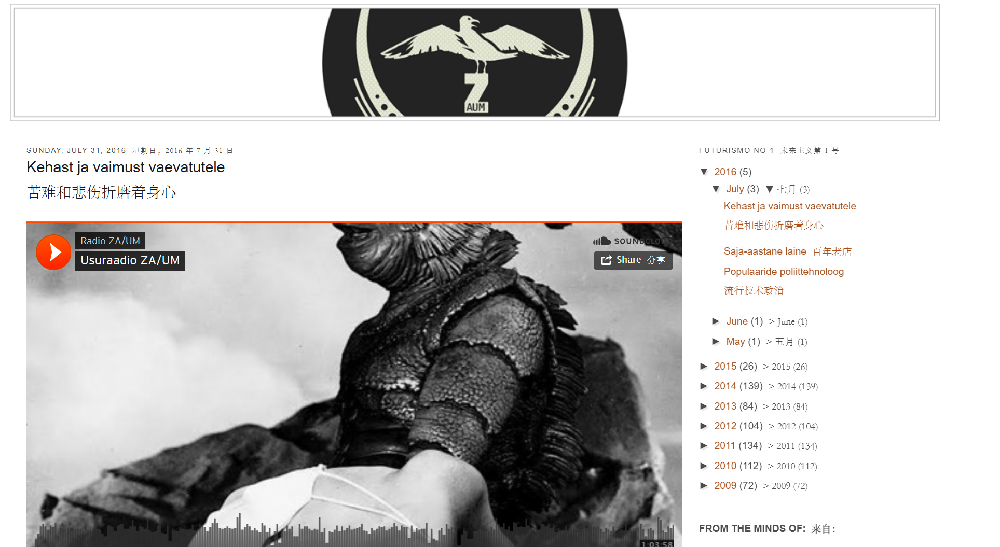
如果翻阅得细心一些，会发现这个博客上已经出现了一些熟悉的名字。
他们的介绍都很有趣：
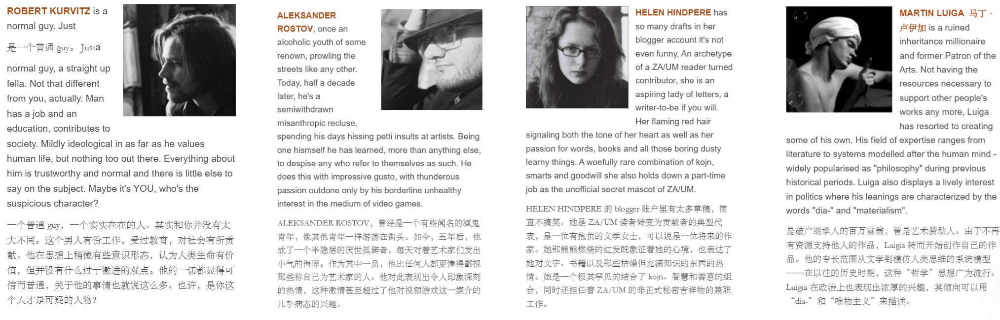
没错，他们是《极乐迪斯科》的核心成员。
Helen通过自己身边的朋友认识了《Disco Elysium》的创作者Kurvitz和Rostov。当时，他们怀着理想主义，希望过上一种浪漫而严肃的生活，讨论实际的问题，而又时刻追求美。他们总体上思想偏左，但并不局限于左翼作者。比起人以类聚，他们更愿意参与到不同观点的讨论与辩论中去。
在爱沙尼亚，如果你坚持不和与你政治观点相左的人来往，那你的社交圈可能会很小。——Helen Hindpere
Helen此时14岁，Rostov则已经25岁。15岁的时候，他从学校辍学，加入了一个无政府主义者组织。他们自称“长袍派”，因为外面特别冷，他们不得不穿着异常厚重的袍子。这帮人制定的口号叫“Today we drink tea; tomorrow we rule the world.（今天我们喝茶，明天我们统治世界）”
在爱沙尼亚的动荡岁月里，少年时期的Robert Kurvitz与伙伴们蜷缩在公寓中，用”龙与地下城”对抗现实的荒芜。从青铜时代到佩里卡尔纳西亚的冷兵器交锋，从弗朗哥尼亚中世纪的暗黑史诗，到多洛里安文艺复兴的理性曙光，他们用纸笔和骰子打造自己的规则书，突破了“龙与地下城”原始的设定，将桌游元素改得更现代。
Kurvitz是狂热的跑团爱好者，他认为，这不仅是艺术，而且是比瓦格纳的歌剧更丰富、更深刻、更宏伟的艺术，容纳奇妙的幻想，也可以反映复杂的政治阴谋。这一切在日后成为了Elysium宏大世界观的起点。
不过，10年代Helen认识Kurvitz的时候，他还在玩乐队。ZA/UM博客上关于他的文章也主要和他们的音乐活动有关。
图中的封面写了乐队的名字——Ultramelanhool。2001年开始，Kurvitz担任这一前锋摇滚乐队的作词人和主唱，他们的演出片段还能在YouTube上找到。
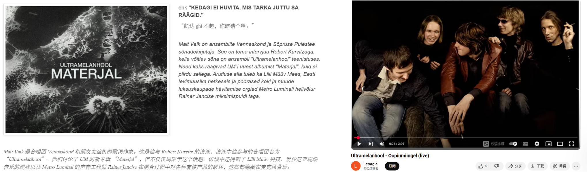
Elysium世界并不仅仅停留在桌面，Kurvitz还耗费了五年撰写《神圣而可怕的空气》。这部将桌游世界观首次文字化的作品得到了他的朋友们的鼎力支持——插画师Aleksander用线条勾勒出朋克质感，Kaur则帮助支付了自费出版所需要的部分费用。
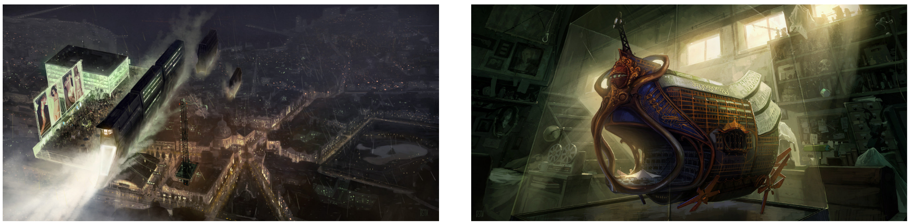
《神圣而可怕的空气》在读者中得到了不错的评价，但最终只卖出了不到1000本。那会儿Kurvitz29岁。他投入了大量时间、精力在这本书上，并对它寄予厚望。这本书的失败令他沮丧非常。
此时，他是被鄙视的新自由主义者，也是被排挤的共产主义者（_“一个不可抹去的污点，不可饶恕的罪行——我们既是极左又是新自由主义者”_）。他逃学、流浪、失业、冬天的时候整天都很伤心。他在学校里的朋友已经从大学毕业很久，成为“真正的人”，拥有能玩《博德之门2》的电脑设备，而他自称为“彻底的弃儿”，忍受着长期的贫困。但是，我们都知道，在六年后，他会带领自己的团队创作出震惊世界的作品。
……
很难想象在除了爱沙尼亚之外的地方，能出现《极乐迪斯科》这样的游戏。
爱沙尼亚在国际社会上被归入东欧国家，但文化上更接近北欧，尤其是芬兰。二月严寒，三月降雪，四月雷暴，夏季光照时间最长19个小时，冬季又是漫长而寒冷的黑夜。前苏联的统治在这里留下了痕迹，让人们的文化生活不自觉地带有一丝严肃的色彩。这里物价不高，首都塔林的大街小巷开了不少咖啡馆、酒吧。到了周末，邻近国家的人便来喝酒，胡同巷子里传来任何国家的“国骂”都不稀奇。
爱沙尼亚的人经历过“残酷的时代”，目睹着前苏联残留的共产主义势力和新的自由主义势力争夺尚未被占领的空间。此后的很长一段时间内，爱沙尼亚致力于做欧盟的“好孩子”，”左翼”二字成为禁忌词汇，即便是为工人争取医疗补贴或最低工资的政党，也会避开这个标签。但是，21世纪的到来，让他们逐渐意识到，自由主义并没有它看起来那么中立。民族差异、社会裂痕、新移民……无形的隔阂滋长着世代相传的敌意，而短暂爆发的愤懑又无处可去。
这是一个安宁和煦的地方，人们没有太多争强好胜的心理。这也是一个复杂敏感的地方，爱沙尼亚人比谁都知道自己的国家始终、一直处于敏感而尴尬的位置。这里的数字化程度很高，可以在家用电子居民证完成几乎任何事。这也是一个保守的地方，充满惶惑地从政治的一头走向另一头。
在另一个国家，另一段时间，很难相信有人15岁辍学的目的是加入无政府组织；很难相信14岁开始，青少年就在研究大量的政治文本，组建自己的“公社”。比起循规蹈矩的国内成长路径，他们的生活像是一场“胡闹”。
我们不能因为《极乐迪斯科》的耀眼就把这些说成“成功的前奏”，因为并不是。这时候，他们是艺术家、疯子、酗酒的人、精神疾病患者、找不到出路的大龄青年、玩乐队读哲学的穷人、痴迷DND的怪胎。
《极乐迪斯科》是属于这群人的游戏，而这群人属于爱沙尼亚。
三、你就是哈里尔·杜博阿
正式进入游戏之后，首先出现的是威尔士诗人 R.S. 托马斯的一行诗——复仇女神们在镜子中安家；那是她们的地址。即使是最清澈的水，如果够深，也能使人溺毙。
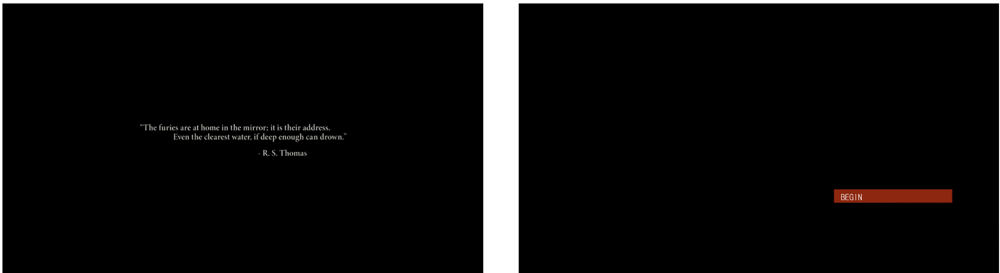
一片黑暗中，屏幕的右下角出现了红底白字的“BEGIN”。
然而，点击之后，迎接玩家的仍然是一片黑暗。仔细听，背景音乐中的号角莫名让人有些紧张。
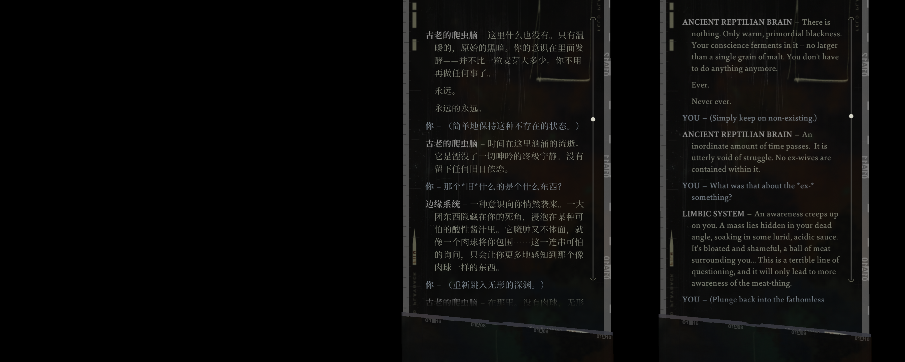
在这片温暖的、原始的黑暗中，一个名为“古老的爬虫脑”的声音对你说，时间在这里汹涌地流逝，湮没了一切呻吟的终极宁静，没有留下任何和前妻有关的依恋，而你对此一无所知。
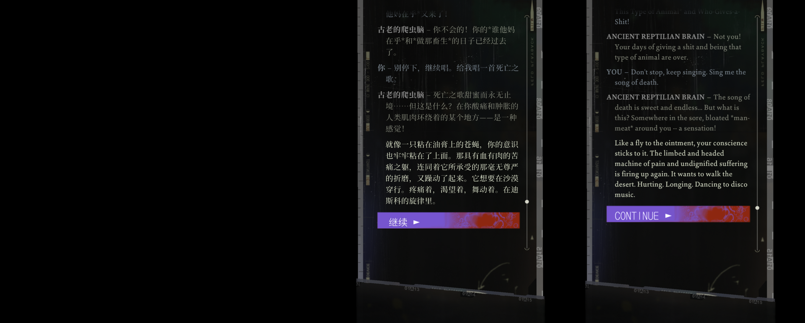
然后，在“边缘系统”的嘲笑之下，你艰难地醒来，发现自己赤身裸体，头痛欲裂，散发着酒精的臭气，屋内杂乱不堪，一只鞋不知所踪。在经历了三天甚至更久的“狂欢”之后，你大喊着“我再也不想做这种动物了！”陷入昏睡，就此丧失了一切记忆，包括自己的名字。住在你隔壁的女人说，她听到了一些前一晚因毒品引发的“自我毁灭狂欢”声。
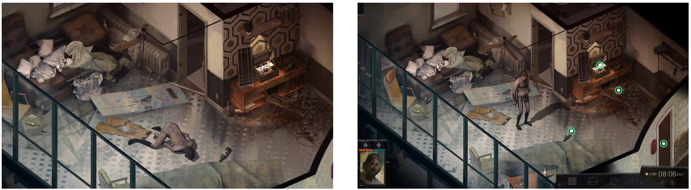
皱巴巴的外套，破了洞的衬衫，沾着酒渍的领带，以及浴室的镜子中倒映出的那张脸——眼角下垂，胡茬杂乱，灰暗颓唐。独特的开场打破了游戏与现实的“第四面墙”，玩家和主角都成了瑞瓦肖的异乡客。
刚开始玩《极乐迪斯科》的人，先会因为神秘抽象的对话和主角的失忆而深感困惑。等他们打开技能面板时，这种困惑还会加深。
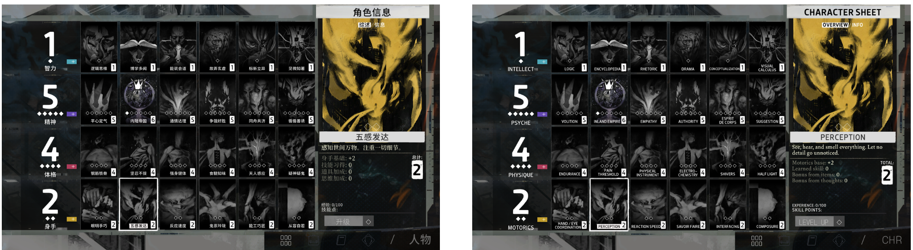
技能面板的左侧，是人物的四个属性——智力、精神、体格和身手。它们的右侧，是24个不同的技能模块。
对应属性 | 技能名称 | 技能描述 |
|---|---|---|
智力 | 逻辑思维（Logic） | 运用纯粹智力，演绎整个世界。 |
博学多闻（Encyclopedia） | 调用知识储备，展示迷人轶事。 | |
能说会道（Rhetoric） | 践行游说之道，尽享严谨话术。 | |
故弄玄虚（Drama） | 看破人生如戏，献艺以诓攻谎。 | |
标新立异（Conceptualization） | 深入理解创意，纵览世间艺术。 | |
见微知著（VisualCalculus） | 重构犯罪现场，驾驭自然法则。 | |
精神 | 平心定气（Volition） | 自励奋发图强，保持斗志昂扬。 |
内陆帝国（InlandEmpire） | 放纵直觉预感，漫游清醒梦境。通情达理 | |
争强好胜（Authority） | 威吓全场民众，树立自身权威。 | |
同舟共济（EspritdeCorps） | 同事心心相印，全局众志成城。 | |
循循善诱（Suggestion） | 魅惑芸芸众生，玩弄傀儡提线。 | |
通情达理（Empathy） | 理解他者心情，锻炼镜像神经。 | |
体格 | 钢筋铁骨（Endurance） | 承受沉重打击，直面世界敌意。 |
坚忍不拔（Painthreshold） | 无惧痛苦创伤，壮胆迎难而上。 | |
强身健体(PhysicalInstrument) | 炫耀坚实肌肉，享受健美躯体。 | |
食髓知味（ Electrochemistry） | 纵情酒色享乐，沉溺毒品之海。 | |
天人感应（ Shivers） | 竖起脖颈汗毛，倾听城市之音。 | |
疑神疑鬼（HalfLight） | 笃信本能反应，恐吓威胁他人。 | |
身手 | 眼明手巧(Hand/EyeCoordination) | 手眼高度协调，枪法百发百中。 |
五感发达（Perception） | 感知世间万物，注重一切细节。 | |
反应速度（ReactionSpeed） | 遇事当机立断，办事雷厉风行。 | |
鬼祟玲珑（SavoirFaire） | 静则蛇行鳞潜，动则英气逼人。 | |
能工巧匠（Interfacing） | 精通万千机械，攻破重重封锁。 | |
从容自若（Composure） | 挺直腰杆做人，从容应对风浪。 |
和传统的RPG游戏不同，此处的技能并不服务于战斗系统（游戏中本就没有单独的战斗系统），而更应该理解为主角内心的24个侧面——它们是哈里尔心智世界的24种独特的声音，在对话系统中吵吵闹闹。
与酒保交谈时，”故弄玄虚”突然怂恿你扮演落魄诗人，“逻辑思维”坚持要分析杯沿的指纹，“五感发达”在感知周围的一切。“争强好胜”叫嚣着逮捕哈迪兄弟给他们点颜色看看，“通情达理”鼓励你探索面前小女孩未能说出口的苦衷。给“内陆帝国”加点更多，你就越容易相信霓虹灯的颜色传递着神秘的讯息，偏高的“能工巧匠”则让你在行走时对身边的一切机械构造产生近乎强迫症的关注。
甚至，不同的声音还会互相拆台。当”疑神疑鬼”警告你书店老板在隐瞒什么时，”从容镇定”发出冷漠的嗤笑——“这只是咖啡因戒断反应”。
此起彼伏的内心辩论，让每一次抉择都更为丰富，也更加艰难。
从描述来看，这种设计很像是在模仿一种精神分裂症，让人想起大名鼎鼎的《Hellblade: Senua’s Sacrifice》或《The Town of Light》。
前者运用了类似的开场。从进入游戏的第一秒开始，女主人公的耳边就好像有无数个声音在说话，或低沉、或惊悚、或绝望、或嘶哑。有些声音在加油鼓劲，有些想阻拦，有些则在冷嘲热讽。后者采用了类似的失忆设计。玩家操作的女孩发现自己独自待在在收容所内，不知自己是谁，为什么到达这里。为了拼凑出自己的生活，女孩接受了一个叫“Renee”的声音的帮助。
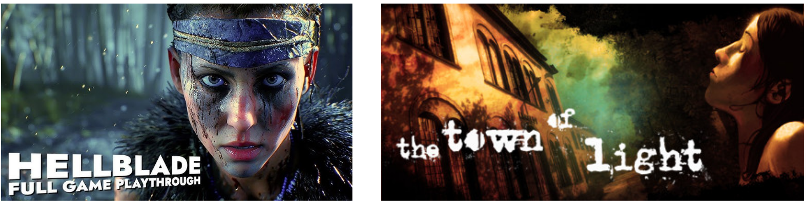
但是，《极乐迪斯科》中纷繁的声音不会给人带来烦躁、痛苦的感觉，也和精神分裂没有关系。它们在游戏内共同服务于哈里尔，而不是游戏想要反映的“主题”。与其说它们是不同的人格，不如说是能力+性格的综合切片（“天人感应”或许除外），是游戏开发者精心挑选，便利玩家打造属于自己的“avatar”的趁手工具。
哈里尔可以在一定的框架内变成任何样子。他是个酒鬼、吸毒的人、压力过大的警探，但他也可以是街头小女孩的守护者，不抽烟也不喝酒的谦谦君子。他可以风餐露宿，守着垃圾桶过活，也可以神神叨叨，从一片迪斯科灯球碎片中复原历史的痕迹。
出于这种设计理念，不同技能之间存在取舍。过度加码“标新立异”会使哈里沉迷于怪异比喻，忽视现实线索；专注“循循善诱”虽能提高破案效率，却可能错过地下室的秘密通道。“争强好胜”会使哈里变得专制易怒，但能有效震慑街头混混；“天人感应”能带来城市的声音，却可能有些过于迷信。它们就像是尼采所说的“权力意志”那样，以自身为目的展开角逐。玩家必须权衡每个加点对人格塑造的影响，就像在现实中选择成为什么样的人。
这些技能也在时时刻刻为玩家带来补充信息。当你在审讯中突然听见”反应速度”吐槽证人的领带配色，或是“坚忍不拔”抱怨剧烈的头痛影响判断时，游戏成功地将数值转化为了可感知的性格特征。
你是哈里尔，44岁的双重荣誉警督，41分局重案组组长，大喊大叫的“龙舌兰日落”，你是超级巨星。
哈里尔·杜博阿就是你。

四、通过狂欢与城市交流
伟大的忽必烈，尽管我努力去描述扎伊拉这座拥有高堡垒的城市，但我知道这无异于告诉你一些空洞的东西。——《看不见的城市》
大部分游戏中，城市只是“场景美术”的一部分，是任务列表后的静态布景，游戏地图的一个高亮标点。一些优秀的游戏作品中，城市是故事背景以及世界观的集中表达，为游戏体验增添别样的生命力和色彩。
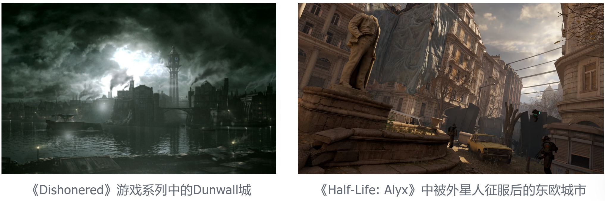
然而，《极乐迪斯科》走上了一条截然不同的道路。这个名为瑞瓦肖（Revachol）的城市，不仅是故事的承载者，更是故事本身的血肉。它不是背景板，而是叙事的主体。
怎样精妙的设计机制能做到这一点？答案是无处不在的检查提示，和“天人感应”技能。
先说检查提示。
玩家进入瑞瓦肖世界的时候，如果打开设置中的“侦探模式”，游戏便会自动用绿色圆圈高亮所有可以检查的物品、地点，它们都是可以交互的。玩家点击绿色圆点时，会出现一行文本描写。这些文字不是简单告诉你”这是把椅子”或者”可以拾取钥匙”，而是用文学化的语言让你感受到这个物件的”灵魂”。
可以料想的是，这些文字大部分和主线任务毫无关系。但是，从街头的涂鸦碎片到商店角落的柜台，它们的确让人身临其境。
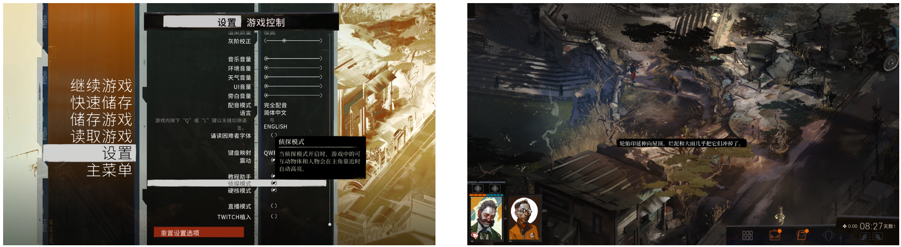
《极乐迪斯科》发布至今，最大争议之一便是，它究竟是不是一部小说？
我认为，地图上遍布的检查点是对这一问题最好的回答。构建CRPG的叙事复杂度远超线性小说创作，密密麻麻的文本网络之下，我们仿佛真的漫步在Elysium世界的一角。
我该如何表达，当我来到一片2D油画风格的海水前，点击海水上的圆点，出现一行“海风吹拂着你的脸颊，你竖起衣领略微感到寒冷”的文字时那一刻的心理震动？这种震动并不一定是每一行文字都写得动人心魄（实际上的确大多数如此），而是已经进入游戏思维的玩家，突然与文学的文本抽象思维再度对撞的超新星爆炸般的冲击。——摘自孔德罡的评论
再说天人感应技能。

当你站在淅淅沥沥的雨水中，天人感应告诉你，灰色天空中有白色的云朵在互相碰撞着，雨点落在这个世界上，落在你破破烂烂的夹克的肩膀部分，让它变得沉重。没有伞的你在雨中感到了寒冷，整个城市都跟着你一起颤抖。
短短几行字，竟然让我感觉到了来自一座城市的爱。
天人感应像是可以穿越千里的眼睛，重构了玩家与虚拟空间的互动方式。当哈里尔站在褴褛飞旋的门外、马丁内斯的冷风中，这项能力会突然将他的意识投射到城市的另一端：潮湿的砖墙上渗出罢工者的汗渍，锈蚀的排水管里回响着革命时期的密谋耳语。城市不再是等待探索的谜题，而是主动向玩家倾吐秘密的诉说者。
可以看出，与其他技能不同的是，天人感应会突然跳出当前的情境，为玩家补上乍一看没有太多关联的信息。
对话提到上学的时候，天人感应忽然打断你：”海风从海岸吹来，带着针刺般的寒冷。它缠绕在一座砖砌的建筑物周围。某处，教室里响起了喧嚣。“你走进一座贫困破败的公寓楼，忽然得知了几十年前建筑师的工作状态：”她的脸因寒冷而发红，她在手指上哈气。她的表情中可见些许忧伤。“
这些信息，和主线没有关系，对侦破案件也没有帮助——它们是叙事本身，为了诉说自己而存在。天人感应帮助玩家理解自己所处的世界，理解一座满目疮痍的城市，理解寒风中人们的悲伤与挣扎。
理解这些之于游玩体验的提升价值，比我们想得更多，因为不同人眼中的瑞瓦肖是截然不同的。革命工人的回忆为街道镀上理想主义光辉，野松集团的文件看见的待开发的区块，书店女主人战战兢兢地害怕着破产的诅咒。虚虚实实之间，我们超越了客观的实在界，抵达了象征界。
说了这么多，到底什么是天人感应？点开技能面板，可以选择对应技能的详细信息查看。
游戏中对天人感应的介绍与“颤抖”有关，这是一种高级的共感设计。在第一段的末尾，它留下了一个悬念。
当温度下降，感官变得敏锐时，你会感到颤抖。借助这个技能，你可以听到城市的声音，真正与街道融为一体。这是一种超自然的能力。你面前重现过去的悲剧，你看到城市另一端发生的事情。但你听到的声音是谁的声音？
你听到的声音是谁的声音？是瑞瓦肖的声音，来自瑞瓦肖之神。在游戏的末尾，她会直接与你对话。
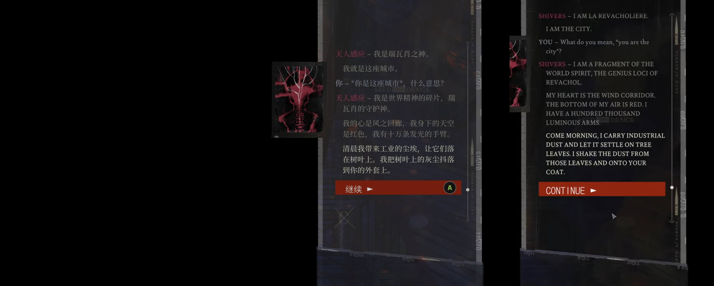
在这里，城市的形象完成了第二个突破。
在此之前，她向你展示了自己布满弹孔的墙壁、浸透酒精的街道、堆满革命武器的地下室，带你触摸历史的脉络、文化的肌理。
街道的角落、窗户的栅栏、楼梯的扶手、避雷针的天线、旗杆的柱子上，我们看到了昔日共产主义的痕迹，也看到了公社在其他国家联军的猛烈轰炸中倒下的创痛。如今，自由资本主义主导着整个社会格局，跨国企业与少数强权政府掌控着岛屿间的政策与贸易。旧政权遗留的创伤仍在民众心中挥之不去，新制度加剧了贫富分化。工会组织表面上维护工人权益，背地却操纵毒品走私投机牟利。外国资本掌握了经济命脉，本地居民在贫困线上挣扎。南部的渔村基本荒废了，而大型码头昼夜运作……瑞瓦肖是破败不堪的，但是至少存在着，活着，呼吸着，拥有未来。在虚无到来之前，瑞瓦肖温柔的臂弯可以将我们带走。
然后，她向你呼救，颤抖着、恐惧着即将到来的毁灭。她充满忧虑地恳求你保全她的生命，但是没有说为什么。
这段对话出现在教堂-极乐迪斯科俱乐部支线，哈里尔、安德烈和金随着狂欢音乐忘情地舞动，惊扰了瑞瓦肖之神。
天人感应结束后，安德烈激动地结结巴巴：“老兄……现在……现在……老兄……现在……”“现在想象一下如果我们能做到，好吗？但是跟，大概，一千人一起呢？”
你说：“彻底狂欢！”
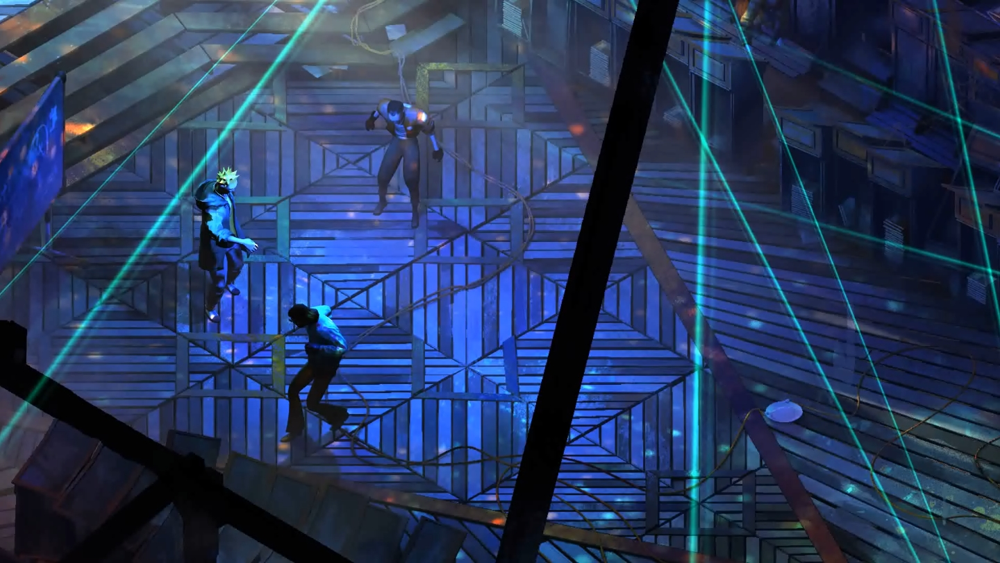
是了，在虚无的边缘，在2mm灰域小洞的旁边，你随着新时代的音乐起舞，成为所在的时代社会的一部分——“哈里尔可以通过狂欢与城市交流。”
五、灰域回响
几年前，BBC刊登过一篇文章，名为《电子游戏为何着迷于世界末日》。
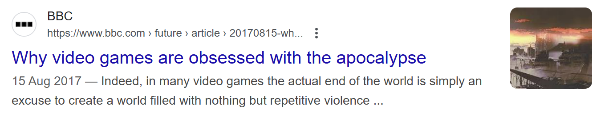
这篇文章虽然有标题党的嫌疑（并未回答提出的问题），但所陈述的却是事实。从《The Last of Us》到《求生之路》《生化危机》，游戏中的末日景象屡见不鲜。
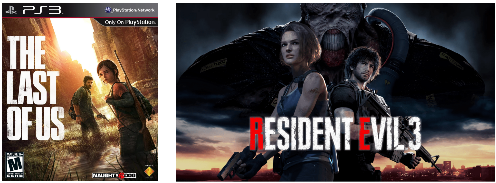
末日游戏的设计思路一般是避免灾难，或从灾难中逃生。然而，在《极乐迪斯科》中，末日只是自顾自地存在着，像是灰色的布景板，不引人注意又难以忽视。
灰域（The Pale）是游戏世界观的核心设定。这片占据世界表面72%的虚无地带，不仅是地理上的隔离屏障，更是扭曲时空规则的异常现象。它不断扩散，吞噬着物质现实与人类认知。游戏解释说，灰域可以在心灵中“写下”Elysium世界中一切事物和每个人的记忆，即使是从未存在过的过去或梦境。灰域吞噬现实，如果你试图穿越它，物理定律、时间的概念，甚至数学运算律都将开始崩溃。只有具备特殊技术、经过意志力训练的人，才能侥幸穿越灰域。
那么，为什么要穿越灰域呢？
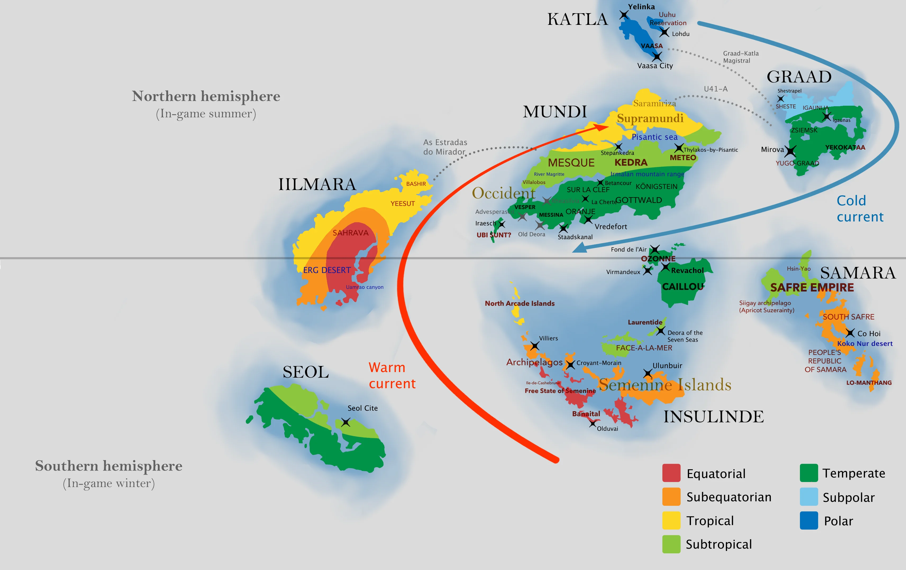
这个被我们称为“极乐世界（ELysium）”的地图上，有七个岛屿（Isolas），彼此之间被灰白色雾气状物质隔开，像是被撕碎的纸片那样漂浮着。世界是属于灰域的，而生命只是其中的例外。如果不穿过灰域，每个岛都是孤岛。
除了图中可见的大面积的灰色，在世界中还有零散的迷你灰域存在，游戏过程中会接触到的“教堂中2mm的小洞”便是其中的一个。

它很微小，如果不是专门研究，根本无法发现。它不能像是大面积的灰域那样，用从未经历过的童年记忆折磨卡车司机，也不会分裂时空。但是，它会吞噬所有的声音，在周边形成一个绝对寂静的领域。
这时候，你意识到，这个2mm的小洞就是灰域的源头，是一种渐变，像癌症或者是霉菌一样在世界里面以小点的形式喷发。它不是在教堂中形成的，教堂是围绕它建立的，而瑞瓦肖建立的第一个十年里，一共建造了7座这样的松木教堂。其余的6座都已经在大革命中被摧毁，但很有可能它们的内部也存在着灰域的源头。
灰域距离我们比想象中更近，裂缝吞噬声音的“咔哒”声便是末日的脚步。被供奉的德洛莉丝·黛并没有找到破解的方法，只是通过发明可以穿过灰域的“灰域纬度压缩器（Pale latitude compressors）”，帮助人们与之共存。
那么，”阳极音乐”的实践者们做了什么呢？
他们将录下的灰域之声加入自己的音乐，在迪斯科灯球的照耀下尽情舞动，用音乐的尖叫来对抗那个被称为“吞噬者”的东西。教堂由此成为音乐与静默、创造与虚无之间的战场。尽管我们都知道静默最终会战胜一切，但这只会让此刻的律动更强烈。
六、地狱发动机
行文至此，一个问题不由得浮现：如果一切都将会确定地在几十年内终结，我们在马丁内斯这片贫瘠的土地上跑来跑去，有什么意义？凶手重要吗？在不断扩大的虚无之中，成为什么样的警察重要吗？罢工重要吗？死亡重要吗？
反正那枚核弹头会将瑞瓦肖夷为平地，然后灰域会让一切归于沉寂。在一个根本不确定的宇宙中，人类能够如何“存在”？
哈里尔的行动没有理睬这样的疑问，他还是照样跑来跑去，给骰子匠人通风报信，在枪战中犹豫是故弄玄虚还是先发制人。

瑞瓦肖之神也没有再次露出自己脆弱的一面，照常传送着风的讯息。瑞瓦肖下雪了，雪花洋洋洒洒地飘落，让海岸上沙子的颜色变得更浅，跟溢出的锈色污水混在了一起。
冬天会慢慢放过瑞瓦肖，春天就要到了。
这座充满失败和毁灭、战争和贫困、衰败和无尽寒冷的城市，现在依然屹立，就像哈里尔一样，就像你一样。
枪战很危险，它会让你受伤甚至死亡。如果是前者，你将会听到古老的爬虫脑对你低语，告诉你，你已经是一个幽灵了。
然后你说：“不，我要继续战斗。” 你决定不走，至少在案子破完之前不可以。外面的世界传来感人的召唤，而你是“地狱的发动机”，再喝一口水就会醒来。
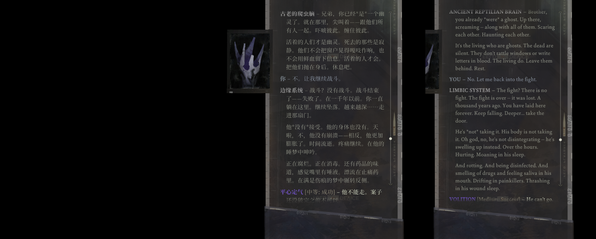
这里的对话树是闭合的，你可以选择说：“很好，我想死。” 但是在那之后，你仍然会说出：“不，我要继续战斗。”否则，黑暗就不会消散，游戏也不会继续。
按照惯常的套路，这段情节应该很燃。但是，在《极乐迪斯科》中，你不会因此感到热血沸腾。战斗只是一种意志，站起来是你客观做出的行动，而不代表昂扬的情绪。你仍然是一个忘记了自己四十多年的生活的落魄警探，不受贿就没有钱支付房租。虽然侥幸从枪战中活了下来，但腿瘸了、血流不止，安格斯和特奥去世了。更糟糕的情况下，你的搭档金也会在雇佣兵审判中死去。那么Cuno会接替他，成为你的新搭档——即使这意味着他不得不与Cunoesse切断了联系。你会带领这个矛盾、敏感、善良、聪慧的孩子踏上《极乐迪斯科》的最后一段旅程。
所以，低到绝望的士气和濒死的伤势都无关紧要。无论经历了什么，你都得站起来、变得更强。
七、比末日更可怕的是自己的过去
在《极乐迪斯科》中，“过去”是以充满创痛的形式出现的。随着情节的推进，哈里尔找回了自己的衣服、鞋子、警徽、枪支、名字，弄明白了自己之前的职业，以及现在自己要做的事。
现在，你从渔村借到了小船，放着音乐，在冷冽的空气中穿行。海湾像一面镜子， 静静映照出马丁内斯。在这个岛上，一切谜题都会解开。但是，比起找到凶手，更重要的是，你会直面自己的创伤根源（之一）。
在岛上的小屋里，你一躺下就开始做梦，在梦中走向水中，那里有你曾经的爱人朵拉（但你称她为德洛莉丝· 黛）。
她的虹膜是淡蓝色的，还夹杂着一点绿色。 你恳求她：“我们能不能再试一次？” 她说：“我们已经尝试过了， 但是没有成功……你很悲伤，哈里，太过悲伤。人们不会变得这么悲伤。”
从梦境中，我们并不能完全得知当年发生的事，但也许和哈里尔高强度的工作有关，也许和他“疯了”有关，或者是因为暴力。无论如何，她会对你说：“我对你有些无礼，哈里，因为你已经是过去了。”
远方的街道传来汽車尖锐的呼啸声，所有星星都在绝对的寂静中燃烧。一阵暖风吹起，当她离开这里时，所有道路都会想念她的脚步。
此时，游戏会引导玩家做出各种各样的事——一字不差地背出曾经的情书、赌咒发誓要重新“变回那个好人”、送上无头FALN骑士的雕像、阻拦朵拉去车站、邀请她喝咖啡，甚至试图再次亲吻她。
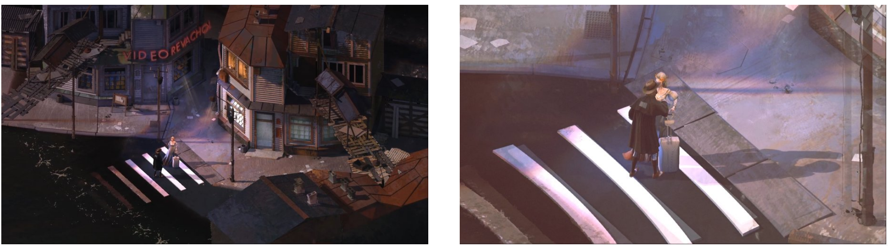
什么也不会发生，什么也不会改变，一切都是旧日之物。梦会结束，而情感创伤不会愈合，至少短期内是这样。不过，如果你不允许自己被过去所吞噬，那么它也不会杀了你。当你醒来的时候，你会重新打开防弹门，在岛上四处乱转——为了证明自己是超级侦探、为了末日、为了硬核迪斯科、为了金、为了康米主义……什么都可以。
Disco是拉丁语，意为“学习”，Elysium 是希腊语，意为“天堂”。如果我们奋斗了这么久、来回传话、穿过枪林弹雨，最后迎接的是荒诞的结局，应该怎么办？如果我们处于神圣而可怖的空气中，知道末日正在靠近，但无处可去，应该怎么办？瑞瓦肖下雨的时候，工人阶级家庭生火做饭，等着一个不可能再回来的人。路边因轰炸而留下的火坑里，两个人讨论着玩球游戏。这一切都让人想起古老的神话所描述的西西弗斯，但是没有人怀着“在无意义中创造意义”那样崇高的想法，他们只是接受荒诞，然后活下去。
这里没有极乐，也没有天堂。这是Elysium世界。
八、在意义的废墟上停留
《极乐迪斯科》的故事不仅仅是解开一个侦探调查谋杀案的过程，更是一场关于人类存在、创伤与反抗的哲学探索。
哈里尔很聪明，他的24个人格碎片一刻不停地思考，密切关注着自己以及周围的一切。但我们都需要承认，他没有特殊的能力，也背负不起伟大的使命。他所处的世界充满否定，以及否定之否定。在游戏的最开始，他就以四十多岁的高龄，重复了一遍海德格尔所说的“被抛入这个世界”的危机。随着情节的深入，我们意识到，他曾追求过完整的家庭生活，拥有着为人类服务的职业理想。然后，这些期许在现实中逐渐枯萎。
当他不断地意识到自己的有限性，这种意识便演化成了一种创伤。像是加缪说的那样，“一个可以解释的世界是一个熟悉的世界。但是在一个突然失去幻想和光明的宇宙中，人会感到陌生。这种人类与其生活之间的分裂，行动者与其框架之间的分裂，正是荒诞感。”荒诞、无力的感觉折磨着哈里尔，朵拉的离去更是雪上加霜。所以，在游戏的开头，他哭喊着：“我不想再成为这种动物了！”
他说的是人类，一种会被自己的思维以及创痛折磨的生物。
哈里尔和常规的英雄最大的不同，在于他的疯癫。你很难想象一个正人君子突然对嫌疑人说：“我想要你（物理上的）”，或者看到他们非理性的一面——大哭、不体面地挽留、意气用事。当哈里尔与脑内的24个声音喋喋不休地对话，金警督在旁边唉声叹气（“真的要这样浪费时间吗”）的时候，我不知道有没有其他玩家想到笛卡尔的“我思故我在”。然后，当瑞瓦肖粗犷复古、笔触奔放、色彩大胆的画面突然从眼前消失，古老的爬虫脑在一片黑暗中对我说话，我接着想到了黑格尔所说的“世界之夜”。
人就是这个黑夜，就是这个空无，他在其纯粹性中包容了一切——他拥有无穷无尽的表征和意象，但这些表征和意象，不属于他，也没有一样能够呈现出来。在变幻无常的表征中存在着的这个黑夜，自然的内部，就是周围的黑夜。在黑夜中，这里在枪击一颗血淋淋的头颅，那里又有一颗苍白的幽灵突然出现它的面前，然后又消失一干二净。人在注视人的眼睛时，在注视那个变得可怕的黑夜时，他就瞥见了这个黑夜。——黑格尔《耶拿实在哲学》
人被比作“黑夜”，其中充满了无意识、混乱的表征和意象。这些意象虽然属于个体却不受其控制，象征着人类内心深处的否定性力量。“世界之夜”人在形成主体性的过程中所经历的一个关键阶段，是主体认识到自身的局限性和虚无感时的一种内在体验。它不是（或不只是）一个消极的否定过程，而是一个创造性的过渡阶段。
换句话说，人必须经历一种“疯狂”，才能将现有的现实理解彻底瓦解，最终回撤到“我思”的自身。这就像是我们打开技能面板，开始定制属于自己的“哈里尔”。可以说，从失去记忆的那一刻开始，哈里尔从实在的世界完全撤退，通过否定自己，进入了属于自己的象征世界。
象征世界，一般是由语言、符号等抽象的内容组成的，这也部分解释了为什么哈里尔在游戏中经常说出一些高度抽象的话。例如，和骷髅头辛迪对话时，标新立异的声音忽然传来：“总之， 艺术是人类交流的最高形式——表现， 叙述， 情感还有错综复杂的代理关系。” 于是哈里尔扔下了正在进行的采访，说：“我能适应这个艺术世界吗?我的意思是…… ”几轮对话后，标新立异毫不留情地嘲笑他：“是的！你在寻找物质。没有社会习俗那乏味的表示法和复制品——这一点在古板的二年生植物上表现地最明显，我们这里谈论的是真正的生活艺术。 成为艺术警探吧。 一半是艺术评论家——另一半是警察。”这段几乎可以称得上是“莫名其妙”的颅内对话，不仅塑造了《极乐迪斯科》独特的艺术风格，也是客观实在与象征世界二分思想的体现。
那么，为什么要提及这些呢？因为意义归根到底，是属于象征界的东西。
人类是不是意义的生物，很难有定论，但至少加缪用西西弗斯打了样。面对意义的荒诞，有三条出路——自杀、保持希望，以及反抗。
巧的是，这三条路，游戏里或多或少都有体现。
进入游戏的第一天，褴褛飞旋的房间风扇上挂着一根领带，哈里尔前一天晚上曾经试着用它上吊。检查完尸体的那个晚上，他做了个梦，把自己想象成这场谋杀的受害者，孤零零地挂在树上。游戏到了中后期，他逐渐意识到自己在醉酒的时候将警车开进了海里，声嘶力竭地尖叫着：“龙舌兰日落的时间到了。 一切终结的时候到了。”如果他花2个小时参悟名为“手指搭在弹射按钮上”的思维，每天晚上都会有机会自杀。
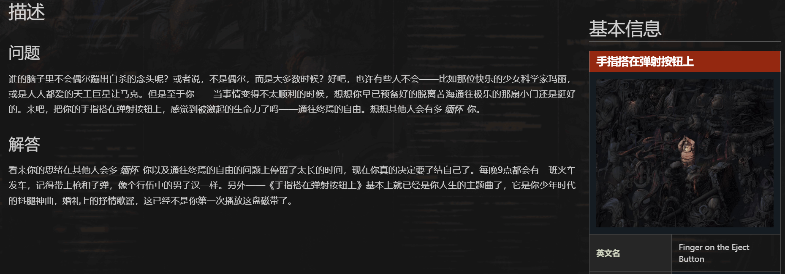
当然，哈里尔有权选择自杀，他会获得对应的结局。不过，如果要一路通向故事的深处，他需要每天晚上拒绝这种诱惑。奇妙的是，当他拒绝时，争强好胜属性和循循善诱属性都会增强。
这是为什么？
人类试图通过理性来理解世界，发现世界是冷漠、无意义而荒诞的。如果选择自杀，意味着彻底的、最终的妥协——荒诞不可解决，自杀的行为是对命运确定性的认可。
如果我们给灰域也冠以荒诞的象征这种意义，那么或许对应的表现就是得知存在灰域之后，放弃挣扎，以一种浑浑噩噩的方式生活，或选择死亡。
哈里尔这么做了吗？没有。（不过这个游戏是自由的，再次强调，他可以这么做…）瑞瓦肖的其他人这么做了吗？没有。
是的，在瑞瓦肖，没有人屈服于荒诞。他们中的一部分不知道荒诞（灰域）的存在，另一些则选择了其他的态度应对之。骰子制造者和褴褛飞旋的老板加特在知道了萦绕在商业区的诅咒后，反而变得更加充满决心，要战胜它。最初的定居者穿过重重灰域抵达岛屿，发现了7条裂缝，他们围绕着那些灰域源点建立了7所教堂。工会头目Evrart腐败、丑陋，却是一个硬核的共产主义者，策划了永远不会因为缺少钱粮而停止的罢工。他的脸永远都不可能被印在T恤衫上，然而他罪恶的形象却恰恰适合用来推进社会主义的进程。
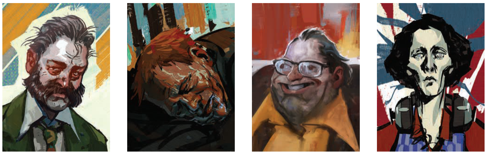
如果一定要找出一个投降了的人，那个人或许是Joyce，因为她就像灰域本身一样冷漠。作为一名拥有难以想象的财富的女人，她不关心自己担任董事的野松集团，也不关心自己。但是，我倾向于认为这些也只是表象。工会威胁发动战争时，Joyce 愿意不战而退，放弃码头。她发自内心地认为，自己代表的是那些需要公司维系生活的人。如果这些人不再需要公司，她宁愿离开，而不会用他们的生命做赌注。并且，攻击一个因灰域的影响而长期无法入睡、精神苍白的人“向灰域投降”，显然是不公平的。
所以，哈里尔拒绝自杀，拒绝向荒诞低头。他的疯狂与不着调，反而是另一种意义上的迪斯科。
那么，第二条路，也即保持希望，在《极乐迪斯科》中有什么体现？我认为是对包括德洛莉丝在内的“无罪者”的供奉。
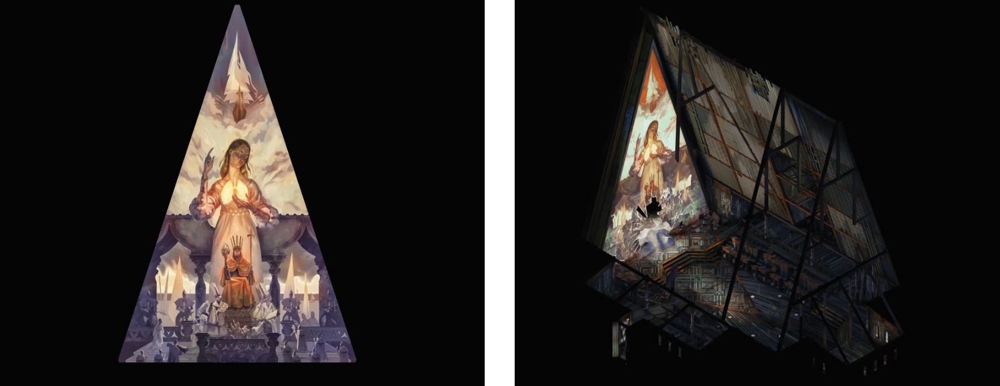
德洛莉丝通过“发现新世界”的期许，鼓励人们将当下的孤独和苦难合理化。就像宗教将意义的问题推给来生那样，灰域探险的悲剧被可能存在的那个光明未来瓦解。刺杀者指控德洛莉丝“非人类”，恰恰体现了这种做法的危险性。如果要让人们信服，当下的行动都是换取未来回报的筹码，那么引导者就必须装备上一定的神性。德洛莉丝所构建的希望一定会破灭，因为穿越一片灰域，抵达的并不是真正的极乐世界，而是另一座孤岛。
第三条路，是耳熟能详的西西弗斯式坚持，但是我已经对这样的说法感到疲惫。《极乐迪斯科》为我展现的，是另一种可能——停留在意义的废墟上。
这种可能性，首先来自于游戏这一艺术载体的开放、自由。前文说过大约两次，“哈里尔也可以不这么做”，因为这是一个游戏，玩家作为参与者而非观看者存在。有些哈里尔从始至终彬彬有礼，说着“对不起”；有些哈里尔是超级巨星，另外一些则来回横跳，自己也不知道在折腾些什么。这就是一种自由——看啊，这里是一片意义的废墟，我们不如就此停留。
其次，则来自《极乐迪斯科》整体展现的反高潮风格。哈里尔的主线任务，是在Elysium的一个边缘小岛的贫民窟，找出杀死雇佣兵的真凶，并回答“我是谁”这个经典的问题。就算打出最好的结局，发现整件事和一个逃兵以及一个莫名的竹节虫有关，又怎样。哈里尔只是完成了他的工作——事实上，这个案子看起来也并不重要。他的回忆没有完全回归，而世界末日也会照常来临。
当然，他也不是空手而归。至少他有金，游戏的末尾我们还会意识到他的前搭档有多爱他；他知道了旧日的恋人再也不会回来，而且已经过上了幸福的生活；他听过瑞瓦肖的声音，在巨大的墙壁上留下属于自己的标语；他或许还受过贿、睡过垃圾桶。总之，他度过了又一段疯疯癫癫的日子。
这么多东西，他看重什么？我们不知道。不知道才是最妙的。逃兵被押送上开往警察局的车的那一刻，我们不再是哈里尔了。他在想什么，未来的生活会因为吊人案产生什么改变，我们不知道。此刻，建构了意义的只有身为玩家的我们——从一个游戏中获得了无与伦比的美学体验，因为它的深邃、悲伤，而心神震动。
也许客观上来说，兢兢业业完成自己的工作的哈里尔，算得上是一种西西弗斯。但是，他在乎吗？我们不知道，所以也不要去管他。
我将这种体验称为“停留”。革命失败了，宏大的理想消失了，命运定下了，巨石停在空中，我们在城市和意义的废墟上，短暂停留。

九、现实迪斯科
时间回到2013年，Robert因为《神圣而可怖的空气》的失败陷入了深深的抑郁，他的朋友Kaur希望重新点燃Robert的创造力和生命力。
我的孩子们告诉我：“别再写书了！没人看书！你们应该去做视频游戏。”——Kaur
Robert此前从未考虑过做视频游戏，也并不确信是否愿意再次尝试，毕竟他已经失败过很多次。“我本来不打算做视频游戏。我当时觉得我们已经失败过够多了，我只想继续喝酒。”
然而，另一位朋友Aleksander的热情让他决定至少试一下，写个摘要。
AD&D与70年代警察剧相遇，在一个原创的‘奇幻现实主义’设定中，结合剑、枪和汽车。以等距视角呈现的CRPG——是《Planescape: Torment》和《Baldur’s Gate》的现代进阶版。庞大、反应式的故事。探索一个贫困的贫民区。深度、策略性的战斗。——《极乐迪斯科》的原始构想
这份原始构想进一步点燃了团队的热情，Robert意识到，做视频游戏的想法不知不觉中已经强烈到让他觉得，如果不能立即着手，活着都没有了乐趣。于是，他们打出了“要么全力以赴，要么直接放弃”的口号，决心将自己的每一分愤怒、痛苦都倾注其中，让它们超越爱沙尼亚的边界。
他们从零开始学习编程和软件生产、QA，尽量习惯用英语写作，奔波筹措数百万的资金，连续五年每天早上七点起床，六十个月的工作中加起来只休息了两个月。他们的团队发生过变动，一开始在爱沙尼亚，然后搬到英国；扩招、裁员、被开发团队抛弃……
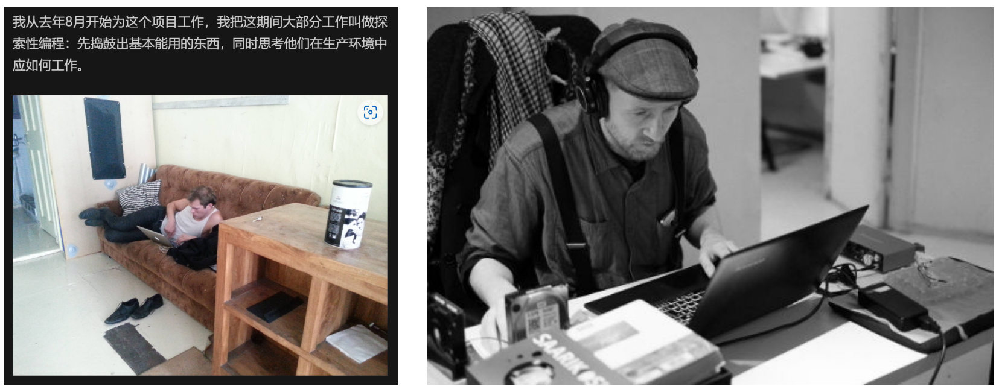
然后，这款革命性的CRPG发布后即获得了Metacritic超过90的高分。上架两个月后，横扫TGA四项大奖，被PC Gamer列入“立即游玩的100款游戏”榜单，排名第一（甚至超过了《巫师3》）。随后，又获得了Mac 年度游戏、PC Gamer年度游戏，以及三个 BAFTA 奖项。
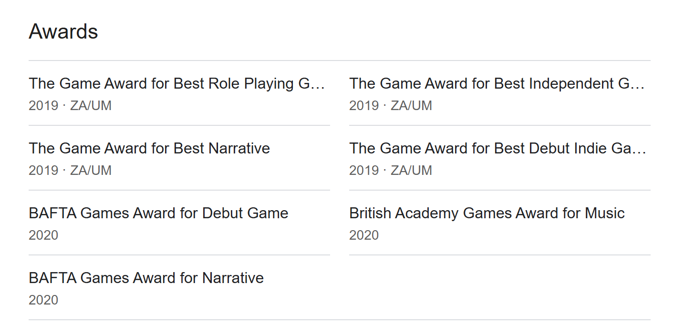
从任何角度而言，这都是一个奇迹。
然而，现实中的迪斯科故事也有着反高潮的特质。我们想象中的艺术家含辛茹苦、卧薪尝胆，一朝扬名立万、财富自由的美好结局没有发生。主创团队被设下圈套，失去了《极乐迪斯科》的IP，并被赶出了他们一手创办的工作室。
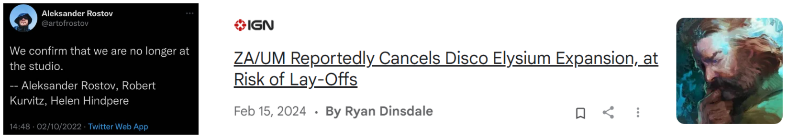
22年10月，ZA/UM 工作室的创始成员 Martin Luiga 以及其他几名关键员工被非自愿地从公司解雇。同一时间，Kurvitz发布博客，指控工作室的控股公司Tütreke OÜ使用工作室的自有资金来转发他们对团队的收购。12月，Kaur就此事提起诉讼，声称Kompus欠他100万欧元，然而后来放弃了诉讼。
这是真正的黑色幽默，以惨痛的现实为游戏世界做出的完美注脚。它让我们看到，即使是表达左翼思想的艺术，也无法避免为资本家带来经济收益。站在今天回首再看游戏发布前以及刚发布时针对主创团队的采访，唯有感慨万千、扼腕叹息。
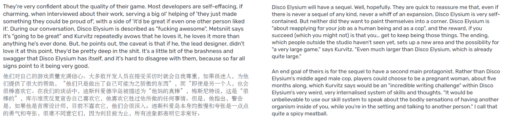
我们不必再期待迪斯科的故事能续写，但是，也许有必要知道一件事—— 斗争仍在继续。
Disco背后的作家之一 Argo Tuulik正在与IP持有者进行法律斗争，他还建立了一个 GoFundMe：
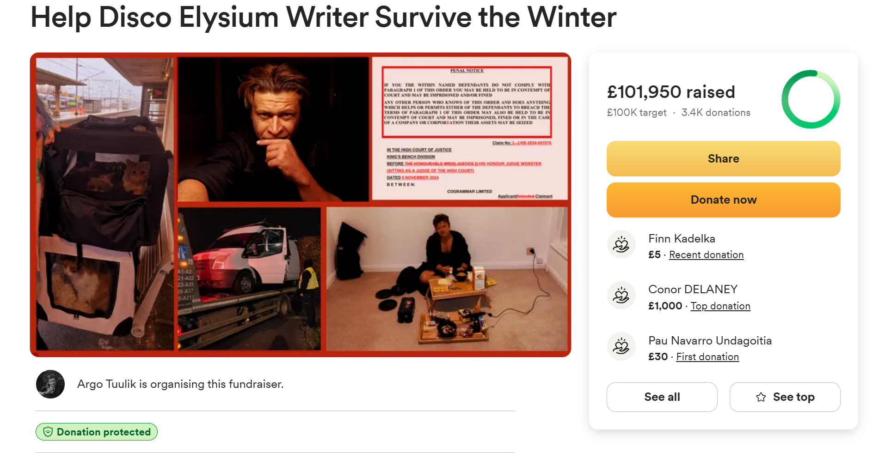
网页上有详细的筹款需求和未来的诉讼计划，如果感兴趣，可以点击https://www.gofundme.com/f/help-disco-elysium-writer-survive-the-winter进行捐款。
写在最后
这是我第一次给一个游戏写测评，因为在通关之后几天内，我都感到自己仍处于《极乐迪斯科》的余震中。
我很喜欢这款游戏，因为它不是关于欢乐，而是关于毁灭、灰暗和悲伤……它是一个关于失败的游戏，并且不会因为检定的失败而惩罚你，只是慢慢教会你面对失败、面对绝望、面对痛苦的世界，以及面对自己。
从第一天的晚上开始，我每一次在休息之前，都会回到镜子面前试图改变容貌，找回“自己的脸”。
几天之后，在渔夫的小屋里，我的检定成功了。然而，用桌上的刮胡刀刮掉胡子之后，镜子中出现的只是一个神情哀伤的老人。
……
迪斯科年代结束了，这里没有极乐。我们的心脏满怀痛楚，每一次呐喊都带出血痕。这里是瑞瓦肖，宽恕的往事沉重，酒精编制出悲凉。
……
“我是瑞瓦肖之神。我就是这座城市。我是世界精神的碎片，瑞瓦肖的守护神。我的心是风之回廊，我身下的天空是红色，我有十万条发光的手臂。清晨我带来工业的尘埃，让它们落在树叶上。我把树叶上的灰尘抖落在你的外套上。 我存在于你的肺与退化的器官之中，各种空间里，当你穿上外套，便穿上了我的灵魂。你坐着车或者步行，自由地穿行在我的街道之间。 我需要你，你在地球上的时候可以拥有我。 ”
“保持警惕，我爱你。”
双重荣誉警督的所有悲伤都会在风中消散，因为他有着能容纳一切的广阔灵魂。
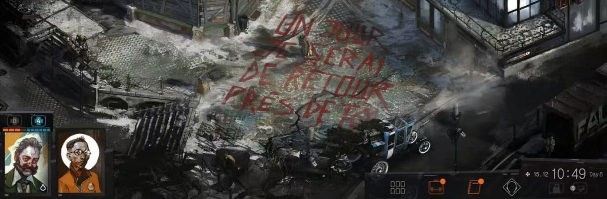